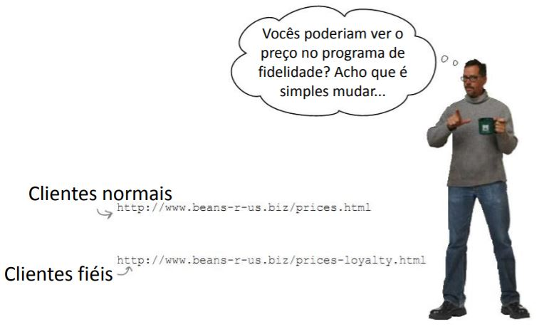
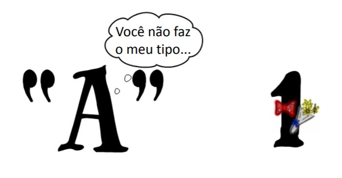
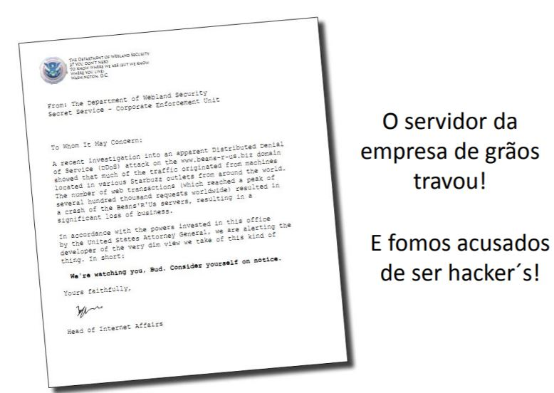

Revisión de String

Texto
Es difÃcil comunicarse sin palabras
Entre los diversos tipos de datos, uno de los más importantes es el texto o string
- Nota: no es tan fácil manipular cadenas en algunos idiomas
Busquemos dónde está la información en un texto ==
- Y aprenderemos uno de los conceptos más importantes de orientación a la
objetos: métodos
Starbuzz Café

Código Starbuzz actual
El CEO solo quiere el precio

El precio está incrustado en el HTML
- Este es el texto HTML "en bruto", que es el formato de las páginas web
- El precio está incrustado en HTML

Strings
- String y cadenas de caracteres

- ¿Cómo obtener solo el precio?

Strings


Strings

Fatiamento
- Fatia do primeiro número até antes do segundo
- Não inclui o segundo número!
Fatiamento

Fatiamento
¡El CEO está feliz!

No hay preguntas tontas
¿Puedo poner alguna página web en este código?
- SÃ. Siéntete libre, pero no olvides la decodificación
- Por ejemplo, el siguiente sitio web utiliza iso8859
- Enlace para el mismo
¿Qué hace urllib.request?
- Te permite chatear con internet
¿Puedo acceder a una página directamente en el navegador?
- SÃ. Escriba en modo interactivo "importar antigravedad"
Descuentos para clientes leales
Programa de fidelización
- ¡No funcionó! "Bean" apareció en lugar del precio. ¿Porque sera?
El precio se movió
- Las páginas son diferentes y el precio cambia de posición en la cadena
Los datos de Python son inteligentes
- Los lenguajes de programación proporcionan funcionalidad incorporada en los datos para ayudarte
- Los datos de Python son inteligentes: pueden hacer cosas
Método find
- Métodos find para strings
- Para conocer los métodos que tengo, dale Ctrl + espacio después de un perÃodo
Método find
Solo cuando es inferior a 4,74

Solo cuando es inferior a 4,74
Las strings son diferentes de los números
Convertir a float
¿Puede seguir probando el precio?

¿Puede seguir intentándolo?
¡El CEO está muy feliz!
Algo salió mal
Acusación DDoS
- DDoS – Distributed Denial of Service

Recibimos un mensaje

Tiempo de biblioteca
- Tiempo actual en segundos time.clock ()
- ¿Estoy en verano? time.daylight ()
- Duerme unos segundos, duerme (segundos)
- Zona horaria time.timezone ()
10 minutos entre cada acceso
Resumen
- Las srings son cadenas de caracteres
- Accedemos a los caracteres individuales por el Ãndice, que comienza con cero
- Los métodos son funciones integradas en variables
- Hay bibliotecas de programación con código listo
- Los datos tienen un tipo, como int o string
Herramientas de Python
- texto[4]accede al quinto carácter
- texto[4:9]accede al quinto al noveno carácter
- El método text.find () busca una subcadena
- float () convierte algo a un punto flotante
- Bibliotecas: urllib.request y equipo